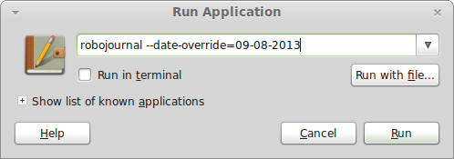
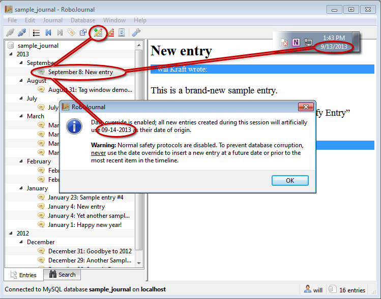

for version 0.5
Appendix B: RoboJournal Program Arguments
Sections
Overview
RoboJournal is capable of receiving additional arguments prior to launch. Many programs, especially those without graphical user interfaces, utilize arguments (also known as "switches" on some operating systems) to set program behavior in advance. These arguments are usually entered at a command line (i.e. Bash prompt on Linux/Unix or cmd.exe on Windows) or through a program launch window (such as the Run Command on Windows).
Using arguments is inherently easier on Linux because command prompts are far more accessible. For instance, pressing the ALT and F2 keys simultaneously displays a Run Application window on common desktop environments like KDE or GNOME/MATE. On Windows XP and older, the "Run" option on the Start Menu was the easiest way to launch a program with custom arguments. On Windows 7 and later, the Run Command still exists but is hidden by default. As such, you must re-enable (Windows 8 method here) the Run Command before you can launch RoboJournal with custom arguments. Furthermore, most Windows programs are designed to be more user-friendly and therefore rely less on esoteric arguments in favor of more comprehensive controls in a program's user interface.
Date Override
Under normal conditions, RoboJournal applies today's date to all new entries created during the current session. However, you can force RoboJournal 0.5 (and later) to use an alternate date for new entries with a hidden but useful function that is activated prior to the current session. This function is universally referred to as the "date override" in this documentation. Requiring the user to enable the date override on a per-session basis is meant to be a safeguard against overuse.
The date override allows you to set a false date of origin for entries written during a session in which date override is active. For instance, you can use the date override to make it appear as though an entry was written on 12/31/2013 even if you actually wrote it on 1/1/2014. This can be useful in situations where your duties require you to keep a daily log. If you forget to write an entry for one or more days, you can use the date override to "fill in" the missing entries at a later time. Date override only affects new entries created during the session; existing entries keep their original dates if you edit them while date override is active.
RoboJournal always displays a warning message after each login when date override is active:Figure 1: A notification/warning message is shown at the start of each connection while date override is active.
Proper Syntax
You can trigger the date override feature by appending --date-override=mm-dd-yyyy to the RoboJournal executable path (for instance, C:\Program Files (x86)\RoboJournal\robojournal.exe --date-override=mm-dd-yyyy). For the argument to be recognized, you must always include one space between the executable name ("../robojournal.exe" or "robojournal") and --date-override. The mm-dd-yyyy portion of the argument refers to the date you want to use (in mm/dd/yyyy format) instead of the current date. For instance, you could use --date-override=01-01-2013 to set the current session's date to January 1, 2013.
RoboJournal accepts and initiates the override if the specified date is valid; for instance, 02-28-2013 is acceptable while 02-30-2013 is not because February 30 does not exist in any year. RoboJournal ignores the date override argument and operates normally if the specified date is invalid and/or the argument syntax is incorrect. You can separate the month, day, and year values in the date with hyphens or forward slashes (but not a mix of both). The following sections demonstrate the correct syntax and usage for Windows and Unix-like operating systems (such as Linux):
Enabling Date Override on Windows
Windows does not accept the --date-override argument when the program is
launched through a desktop or Start Menu shortcut. Therefore,
the only way to initiate date override from Windows is
through the Run Command window on the Windows Start
menu: Figure 2: Under the current settings, RoboJournal's
date override is set for September 3, 2013.
Figure 2: Under the current settings, RoboJournal's
date override is set for September 3, 2013.
Enabling Date Override on Unix/Linux
Enabling date override on Linux or any other type of
Unix-like operating system (like Mac OS X) is extremely
simple due to how those operating systems store executables.
Since Unix-like operating systems usually store all installed
applications—including RoboJournal—in a single
folder (/usr/bin), there is no need to specify absolute
pathnames when launching a program from the console.
To start RoboJournal with date override enabled, open a terminal application (Konsole, XTerm, mate-terminal, etc.) and enter robojournal --date-override=mm-dd-yyyy at the command prompt:Figure 3: Launching RoboJournal through mate-terminal on Linux Mint 15 with the date override set to September 8, 2013.
Alternatively, you can launch RoboJournal through the aforementioned Run Application window by pressing the ALT and F2 keys simultaneously (assuming you are running KDE, GNOME, MATE, or a similar desktop environment). The Run Application window's appearance varies depending on which desktop environment you are using at the time:Figure 4: Launching RoboJournal (with date override enabled) through the Run Application window on Linux Mint 15.
Disable Safety Protocols
Starting in version 0.5, RoboJournal utilizes safety protocols that protect database integrity by preventing misure of the date override feature. If you invoke the date override by providing a date that is valid but is not truly logical, RoboJournal's safety protocols normally prevent you from adding new entries by disabling the Write in Journal toolbar button/menu item. RoboJournal considers a date to be logical only if it falls inbetween the most recent entry in the journal and the current date.
The safety protocols usually prevent misuse of the date override feature but on rare occasions you may need finer control. The --no-safety argument disables the date override safety protocols and allows you to write new entries whether the current override date is logical or not:
Figure 2: Safety protocols have been disabled in this screenshot. The Write in Journal button is enabled even though the override date is one day later than the current system date (shown in the Windows Taskbar) and nearly a week ahead of the most recent entry in the journal (September 8).
Proper Syntax
The --no-safety argument must be listed after the date override argument in order to be recognized:
i.e. C:\Program Files (x86)\RoboJournal\robojournal.exe --date-override=mm-dd-yyyy --no-safety
Copyright © 2014 by Will Kraft. All parts of the RoboJournal Documentation are subject to the terms of the GNU Free Documentation License.